Controle de processos multi-empresa: como o sistema funciona, como foi construído e quais são seus limites atuais.
| Versão do código | commit 6feeda3 (branch claude/awesome-hopper-3on31d) |
| Data | 12 de novembro de 2026 |
| Estágio | MVP funcional, ainda não preparado para produção |
| Repositório | github.com/monfredo18/Viriato |
O Viriato é um sistema web para cadastrar, acompanhar e automatizar processos dentro de uma empresa. Cada processo percorre as etapas de um fluxo definido pela própria empresa, tem um responsável, um prazo por etapa, documentos anexados e um histórico completo do que aconteceu.
O sistema foi desenhado desde o início como SaaS multi-empresa: uma única instalação atende várias empresas, e os dados de uma nunca são visíveis para outra.
| Termo | Significado |
|---|---|
| Sua empresa (tenant) | Quem usa o sistema. Todos os dados pertencem a uma empresa, e uma nunca vê os dados da outra. |
| Empresa atendida | Para quem o processo é feito (na tela, "Empresa"). Tem nome e número (código interno). Guardada na tabela cliente. |
| Setor | Departamento. Cada setor define quais entregas pode fazer. |
| Entrega | O que pode ser entregue. Cada entrega está ligada a um fluxo, que vira o fluxo do processo. |
| Fluxo | Modelo de trabalho: conjunto de etapas e das transições permitidas entre elas. |
| Etapa | Um passo do fluxo. Pode ter prazo em dias, ser a inicial ou ser final. |
| Transição | Caminho permitido de uma etapa para outra. Só movimentos previstos são aceitos. |
| Processo | Um caso concreto em andamento num fluxo (contrato, alvará, licença etc.). |
| Responsável | Usuário encarregado do processo no momento. Recebe os avisos. |
O sistema é um monolito modular: um único backend dividido em módulos por assunto, o que é mais simples de operar do que microsserviços e permite separar partes depois, se for preciso.
/api ao backend.| Camada | Tecnologia | Papel |
|---|---|---|
| Interface | React 18, TypeScript, Vite, React Router | Telas, rotas, tema claro/escuro |
| Backend | Java 21, Spring Boot 3.3 (Web, Data JPA, Security, Validation) | API REST, regras, segurança |
| Banco | MySQL 8.4, Flyway | Dados e versionamento do esquema |
| Autenticação | JWT (jjwt), BCrypt | Login sem sessão no servidor |
| Arquivos | AWS S3 (SDK v2) | Documentos anexados |
| Documentação da API | springdoc OpenAPI / Swagger UI | Referência interativa em /swagger-ui.html |
| Infraestrutura | Docker, Docker Compose, Nginx | Execução local e base para produção |
| Qualidade | JUnit 5, MockMvc, H2, GitHub Actions | Testes automáticos e CI |
| Módulo (backend) | Responsabilidade |
|---|---|
seguranca | Geração e validação do JWT, filtro de requisições, regras de acesso e CORS. |
usuario | Login por nome, senha provisória, primeiro administrador, usuários e papéis. |
fluxo | Fluxos, etapas e transições por empresa. |
processo | Núcleo do sistema: processos, movimentação, histórico, atribuição, cancelamento. |
documento | Upload, download e remoção de arquivos, com armazenamento abstraído (S3). |
notificacao | Avisos no sistema e agendador de prazos. |
comum | Tratamento padronizado de erros e utilitários de data. |
Esta seção percorre a jornada de uso, da primeira tela até o encerramento de um processo.
Entra-se com nome e senha; não há campo de e-mail e não existe cadastro aberto de empresas. O primeiro administrador nasce da configuração do ambiente (ADMIN_NOME, ADMIN_SENHA e ADMIN_EMPRESA) na primeira vez em que o sistema sobe com o banco vazio; nesse momento o sistema também cria o setor Geral, a entrega Atendimento geral e um fluxo padrão. As empresas atendidas são cadastradas depois pelo administrador ou pelo gestor.
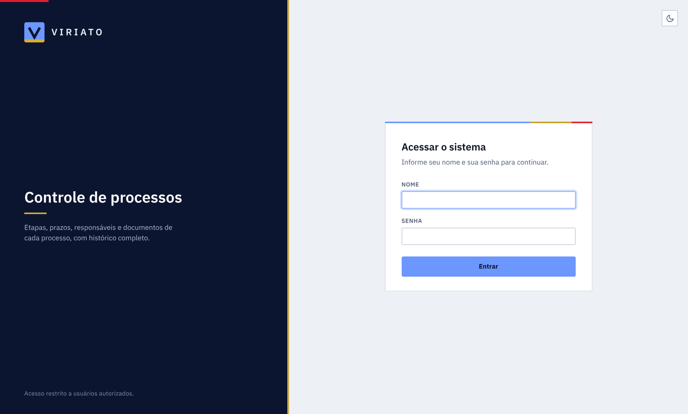
A senha inicial é provisória. Isso vale para o administrador criado pela configuração, para quem é cadastrado por administrador ou gestor e para quem teve a senha zerada. Ao entrar com uma senha provisória, a pessoa vê somente a tela Crie a sua senha (duas digitações iguais, mínimo de 8 caracteres e diferente da senha inicial); o servidor também bloqueia todo o resto da API até a troca ser feita, então não dá para contornar pela tela. Depois disso a senha inicial deixa de valer.
O nome é a identificação de acesso: não diferencia maiúsculas de minúsculas, é único na empresa e não aceita @. Se duas contas ativas tiverem o mesmo nome e a mesma senha, o acesso é recusado até o administrador diferenciar os nomes. Contas criadas antes desta versão ainda podem entrar com o e-mail; o e-mail não é mais pedido, exibido nem exposto pela API.
Zerar senha: somente o administrador, e vale para funcionário, gestor ou outro administrador (não para a própria conta). Ao zerar, ele informa na hora a nova senha (provisória); a senha antiga deixa de valer, as sessões abertas da pessoa são encerradas e, no próximo acesso, ela cria uma senha própria.
A empresa de cada requisição vem sempre do token, nunca de algo que o usuário digite. É isso que sustenta o isolamento entre empresas.
Administradores e Gestores criam fluxos na tela Fluxos: informam as etapas em ordem, o prazo em dias de cada uma, qual é a inicial (exatamente uma) e quais são finais (ao menos uma). Regras validadas pelo sistema:
Um fluxo pode ser desativado (deixa de aceitar novos processos, mas os que já existem continuam normalmente) ou apagado, conforme as regras da seção 4.
A página Cadastros reúne três listas, todas por empresa do sistema:
Setores e entregas também são mantidos pelo administrador e pelo gestor. Qualquer item pode ser desativado (deixa de aparecer para novos processos, sem afetar os que já existem) ou apagado, conforme as regras da seção 4. Os nomes não se repetem dentro da empresa.
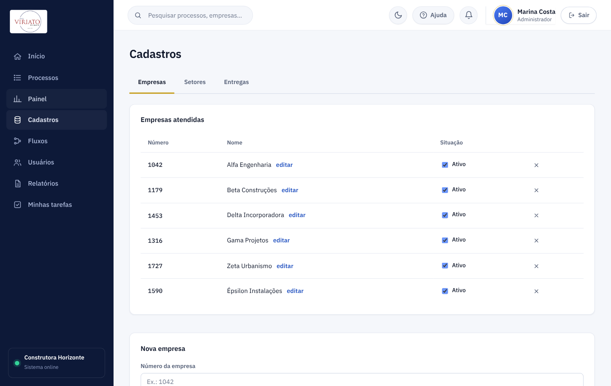
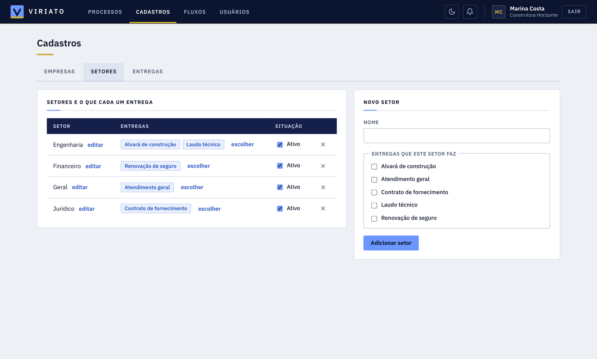
Qualquer usuário pode abrir um processo, mas o formulário pede só o que cabe ao papel de quem abre:
| Quem abre | Informa | O que o sistema define sozinho |
|---|---|---|
| Administrador | Empresa, departamento, entrega e responsável | — |
| Gestor | Empresa, entrega e responsável | O departamento é o do próprio gestor |
| Usuário | Empresa e entrega | O departamento é o dele e o responsável é ele mesmo |
A entrega listada é sempre somente a que o setor faz, com a indicação do fluxo que será usado. O responsável escolhido por administrador ou gestor precisa estar ativo e ser do setor do processo (o administrador pode ser responsável em qualquer setor). Quem não é administrador e não tem setor definido não consegue abrir processos até que o administrador defina o seu setor. Se uma requisição tentar enviar outro setor ou responsável, o servidor ignora e aplica a regra do papel.
Há ainda um campo opcional de observações. Não existe campo de título, de número nem de fluxo: o título é gerado (por exemplo Laudo técnico — Construtora Alfa) e o fluxo vem da entrega. Ao criar, o sistema:
1042);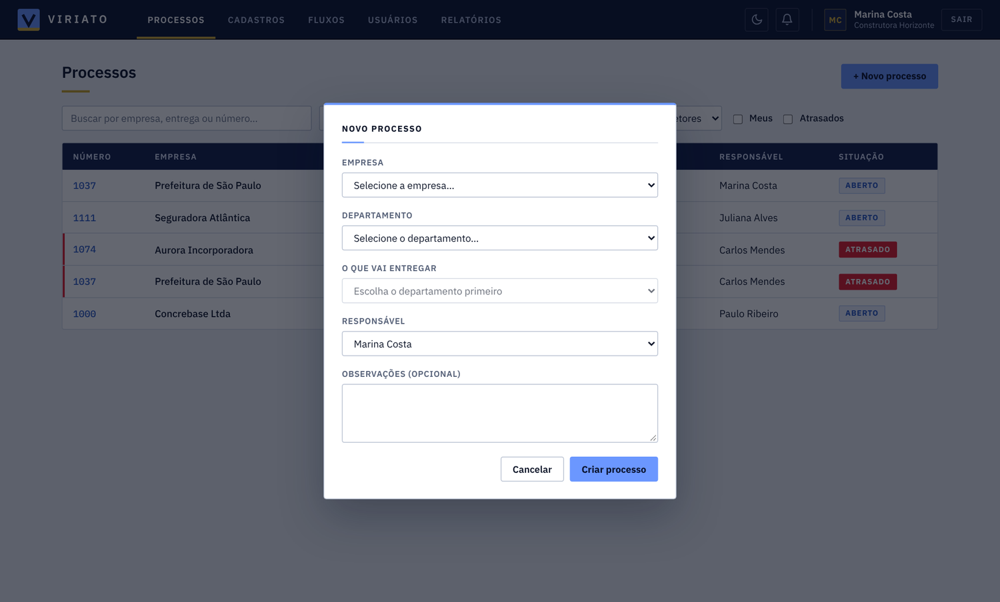
A lista de processos mostra, nesta ordem, número, empresa, setor, entrega, prazo, responsável e situação (a etapa atual aparece no detalhe), e tem busca por empresa, entrega ou número, filtros por situação, empresa e setor, Meus (onde sou responsável) e Atrasados, com paginação. Um processo é considerado atrasado quando está aberto e o prazo da etapa já passou; isso é calculado na hora da consulta.
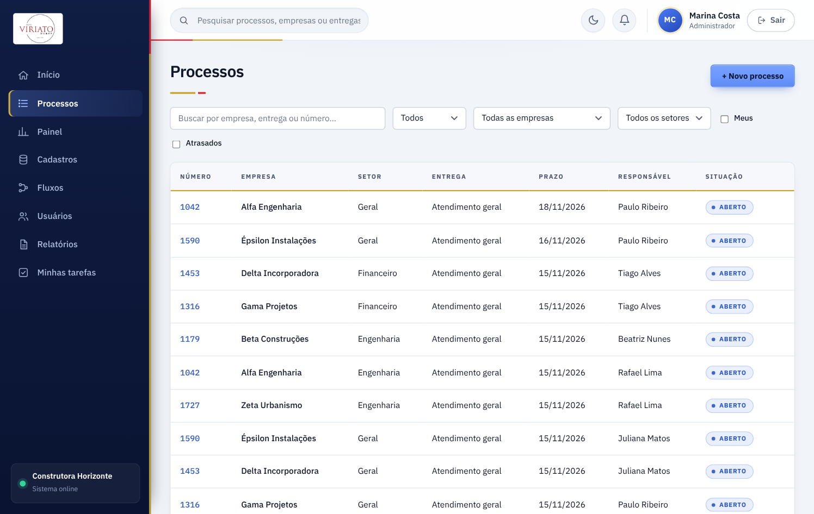
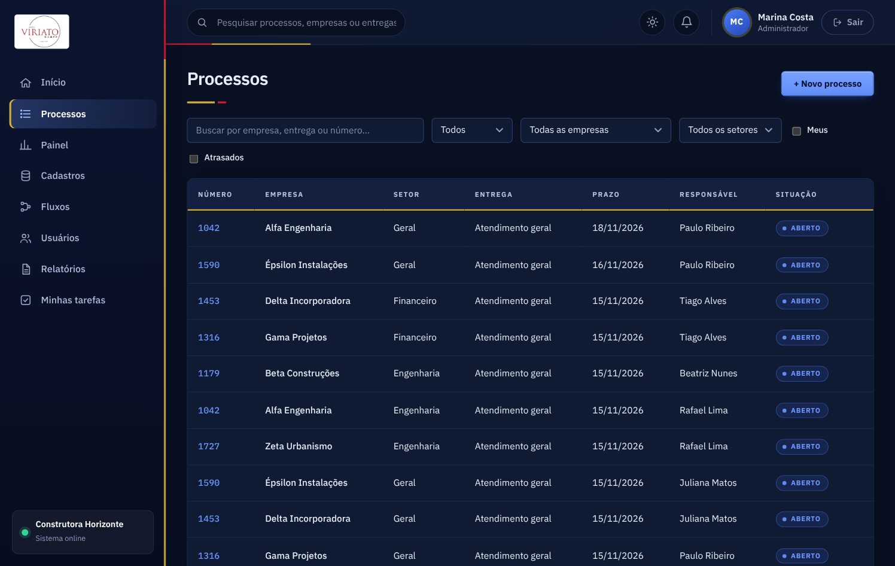
No detalhe do processo aparecem os botões das etapas para as quais o fluxo permite avançar a partir da etapa atual. Ao avançar:
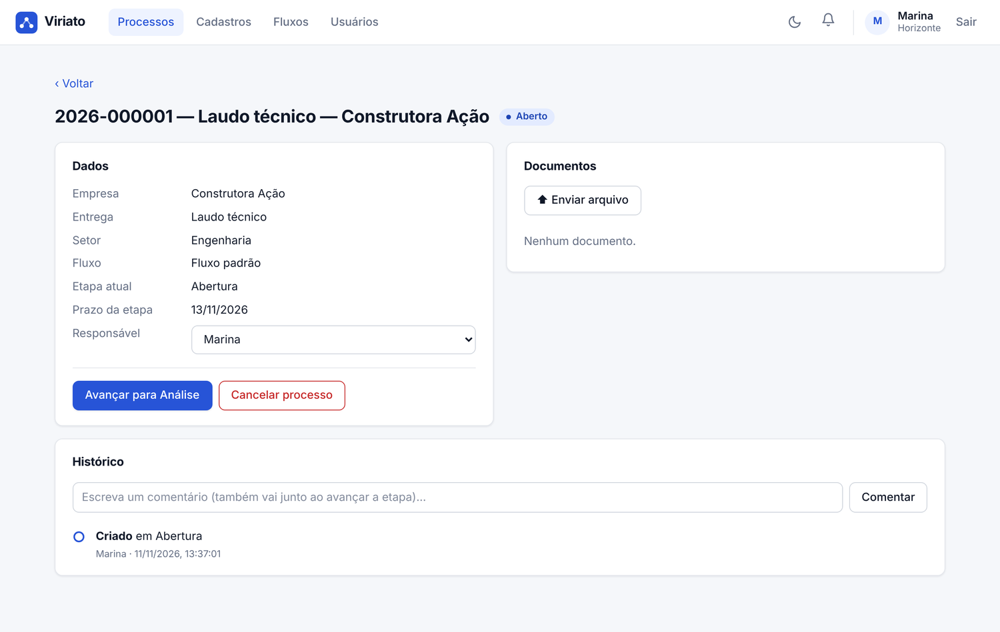
Cada processo aceita anexos de até 25 MB por arquivo. O sistema sanitiza o nome do arquivo (remove caminhos e caracteres perigosos), grava no S3 com uma chave única por empresa e processo e criptografia no repouso (AES-256), e só então registra no banco. Se o registro falhar, o arquivo enviado é removido para não sobrar lixo no bucket. O download passa pelo backend, que confere a empresa antes de entregar o arquivo; não há links públicos.
Uma tarefa agendada roda todos os dias às 08:00 (America/Sao_Paulo). Ela procura processos abertos, com responsável, cujo prazo vence em até 1 dia ou já venceu e que ainda não foram alertados naquela etapa. Para cada um, avisa o responsável (Prazo próximo do vencimento ou Prazo vencido) e marca como alertado. O resultado é um alerta por etapa; ele volta a valer quando o processo muda de etapa ou de responsável.
Cada notificação diz o que foi feito e quem fez, no título (por exemplo Processo movido para Revisão - Nome do funcionário), e informa a empresa, a entrega, a data e a hora. Quem recebe é somente o gestor do setor do processo: o responsável, os demais funcionários, o administrador e os gestores de outros setores não são avisados, e quem fez a ação também não é avisado de si mesmo. O alerta de prazo segue a mesma regra (autor: Sistema). A notificação é gravada no sistema (sininho no topo, com contador de não lidas, atualizado a cada 30 segundos). O sistema não envia e-mail.
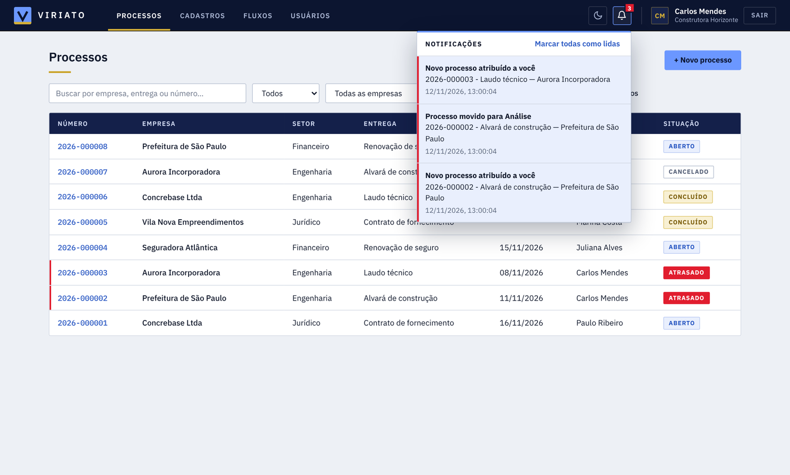
A aba Relatórios gera um PDF com os processos, e está aberta a todos os papéis. O que cada pessoa pode abranger é decidido pelo servidor, a partir do papel, e não pelo que a tela envia:
| Papel | Abrangência do relatório |
|---|---|
| Administrador | Todos os setores, com a opção de filtrar por um setor. |
| Gestor | Somente o próprio setor. O filtro de setor fica travado, e a lista de responsáveis traz só quem é do setor. Pedir outro setor direto pela API é recusado (403). Gestor sem setor definido não consegue gerar relatório e recebe um aviso. |
| Usuário | Somente os próprios processos (aqueles em que é o responsável). O filtro de responsável fica travado nele mesmo. |
Os filtros se combinam: setor, responsável, empresa, período (por data de abertura ou por data de encerramento) e situação (em andamento, concluídos, cancelados). Antes de gerar, a tela mostra uma prévia com os totais (total, em andamento, atrasados, concluídos e cancelados); o botão fica bloqueado se não houver processo, se a data inicial for depois da final ou se nenhuma situação estiver marcada. No período por encerramento, só entram processos concluídos ou cancelados, e a data considerada é a da última movimentação.
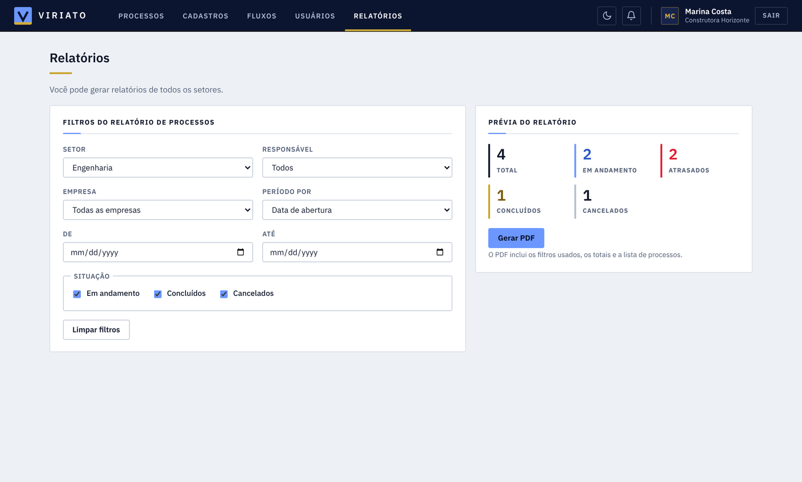
O PDF sai em A4 paisagem, na identidade visual do sistema: cabeçalho com a empresa, quem gerou, quando e a abrangência; a lista dos filtros usados; os totais; e a tabela com número, empresa, setor, entrega, responsável, data de abertura, data de encerramento e situação (o atrasado aparece em vermelho). O cabeçalho da tabela se repete em cada página, e o rodapé traz Página X de Y. Cada relatório comporta até 10.000 processos; acima disso o sistema pede para refinar os filtros.
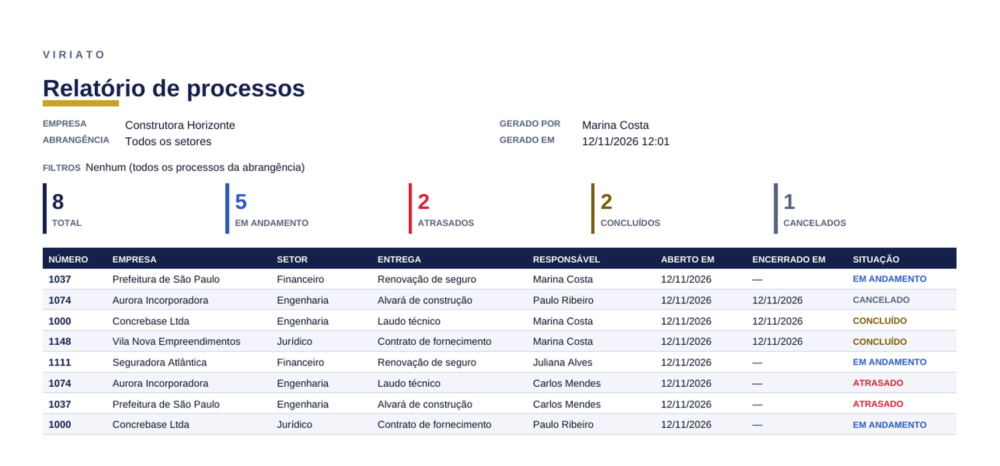
Cada etapa pode ter requisitos para sair dela, definidos por administrador ou gestor em Fluxos → Configurar (até 10 por etapa; a etapa final não tem saída). Há dois tipos:
Na tela do processo aparece o checklist da etapa atual, com Confirmar e Anexar; o botão de avançar fica bloqueado enquanto houver pendência, e o servidor também recusa o avanço, com a lista do que falta, para todos os papéis (ninguém pula requisito). As regras:
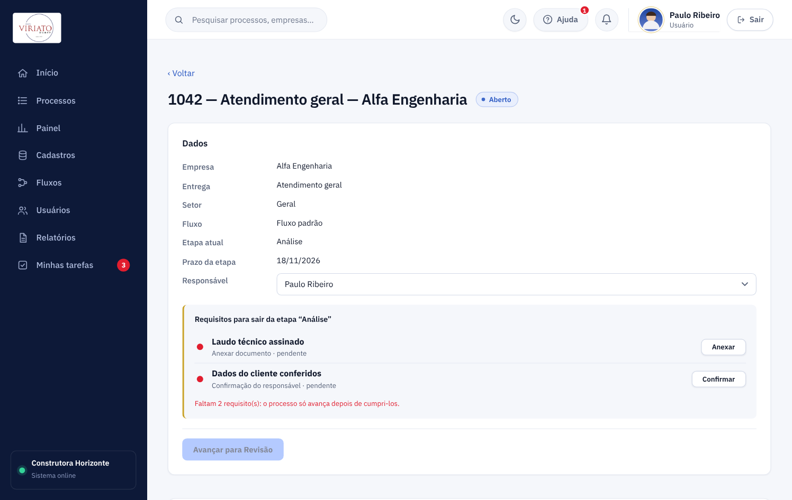
Cada etapa define quem pode mover um processo para ela: qualquer responsável (padrão), somente gestor ou administrador ou somente administrador. Quem não tem esse papel não consegue mover direto (o servidor recusa) e vê o botão Solicitar aprovação:
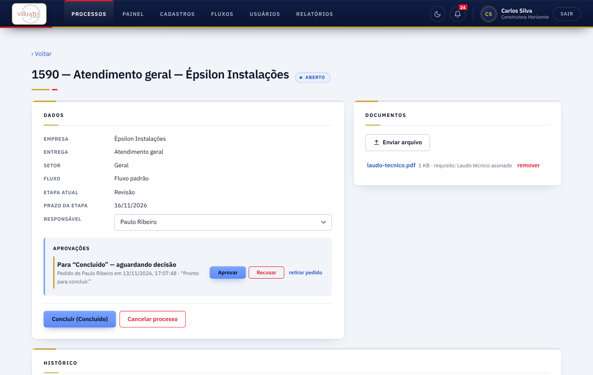
A aba Painel mostra, para os últimos 30, 90, 180 ou 365 dias (os processos em andamento aparecem todos): os números principais (em andamento, atrasados, concluídos, cancelados e tempo médio até concluir), uma tabela de atrasados por setor, as barras de tempo médio por etapa e a carga por funcionário. A abrangência segue a regra dos processos: o administrador vê todos os setores (e filtra por um); gestor e usuário veem o próprio setor.
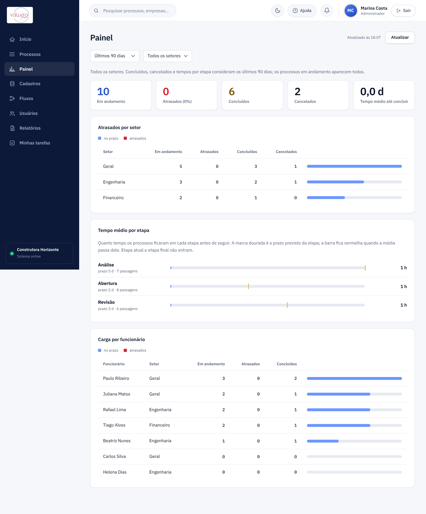
Em Fluxos → Configurar (etapa) e Ao cancelar (fluxo), administrador e gestor definem regras que o sistema executa sozinho depois que o processo entra na etapa (inclusive a inicial, na criação) ou é cancelado:
| Regra | O que faz |
|---|---|
| Gerar a ficha do processo | Cria um PDF com os dados e o histórico do processo e o anexa a ele, marcado como gerado automaticamente. Uma por etapa. |
| Chamar outro sistema (webhook) | Envia um POST com JSON do processo (evento ENTROU_NA_ETAPA ou CANCELADO). Com segredo, o cabeçalho X-Viriato-Assinatura traz sha256= e o HMAC-SHA256 do corpo, para quem recebe conferir a origem. |
Garantias e cuidados:
https://, sem usuário e senha na URL e nunca para a rede interna (localhost, endereços privados, 169.254.x.x e semelhantes são recusados na configuração e de novo, resolvendo o nome, na hora de enviar); sem redirecionamentos e com prazo de 10 s. O segredo nunca volta pela API, e só administrador e gestor consultam as regras.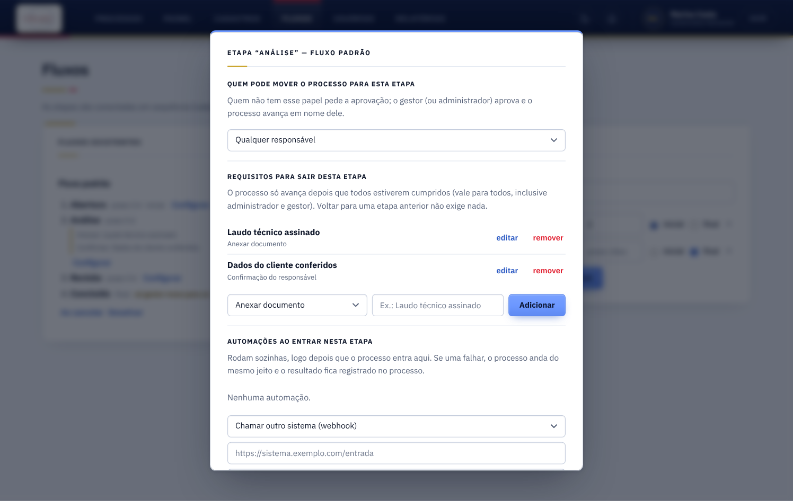
Os processos são separados por setor: gestor e usuário enxergam apenas os processos (e documentos e histórico) do próprio setor; só o administrador vê os de todos os setores. Processo de outro setor responde “não encontrado”, inclusive no endereço direto, nos documentos e nos filtros. Cadastros, fluxos e a equipe (com papel e setor) continuam visíveis a todos. O que muda, além disso, é quem pode alterar.
| Ação | Administrador | Gestor | Usuário |
|---|---|---|---|
| Ver processos | de todos os setores | só do próprio setor | só do próprio setor |
| Ver cadastros, fluxos e equipe | sim | sim | sim |
| Abrir processo | sim | sim | sim |
| Movimentar, comentar, anexar e remover anexo, reatribuir | em qualquer processo | em qualquer processo do seu setor | só nos processos em que é o responsável |
| Gerar relatório em PDF | de todos os setores | só do próprio setor | só dos próprios processos |
| Cancelar processo | sim | sim | não |
| Cadastrar e alterar empresas atendidas | sim | sim | não |
| Cadastrar e alterar setores e entregas | sim | sim | não |
| Apagar empresas, setores e entregas | sim, se não houver processo em andamento ligado | sim, se não houver processo em andamento ligado | não |
| Apagar fluxos | sim, se nenhuma entrega o usa e não houver processo em andamento nele | sim, se nenhuma entrega o usa e não houver processo em andamento nele | não |
| Configurar requisitos, quem move para cada etapa e automações | sim | sim | não |
| Mover para etapa que exige gestor (ou administrador) | sempre | se a etapa aceita gestor; senão pede aprovação | pede aprovação |
| Aprovar ou recusar pedido de aprovação | qualquer um | os de etapas que aceitam gestor, no próprio setor | não |
| Ver o painel de indicadores | todos os setores | só o próprio setor | só o próprio setor |
| Criar e ativar/desativar fluxos | sim | sim | não |
| Adicionar funcionários | com qualquer papel; informa nome, senha inicial, papel e setor | só com papel Usuário; informa nome, senha inicial e papel, e o funcionário fica no setor do gestor | não |
| Zerar a senha de uma conta | de qualquer outra conta, informando a nova senha | não | não |
| Alterar o setor de um funcionário | sim | não | não |
| Alterar o papel de um funcionário | sim | não | não |
| Ativar ou desativar funcionário | qualquer um | só os de papel Usuário | não |
| Apagar funcionário | qualquer um, menos a si mesmo; processos em andamento passam para herdeiros | só os de papel Usuário do próprio setor | não |
Detalhes de comportamento:
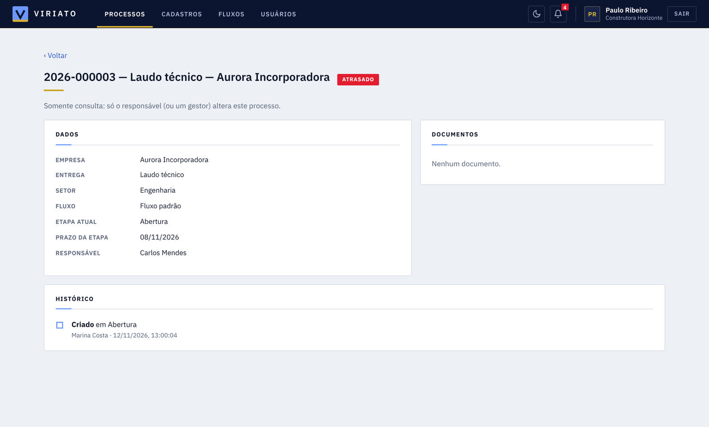
Todas as tabelas de negócio têm a coluna tenant_id, e toda consulta filtra por ela. O esquema é criado e versionado pelo Flyway, em treze migrações: V1 (base), V2 (empresas atendidas, setores, entregas e setor do funcionário), V3 (empresa, entrega e setor no processo) V4 (processo encerrado pode ficar sem fluxo) V5 (número da empresa; o número do processo deixa de ser único) V6 (detalhes da notificação) V7 (nome do responsável apagado no processo) V8 (login por nome: e-mail opcional, senha provisória e versão da sessão), V9 (requisitos por etapa), V10 (aprovação em etapas) V11 (automações) V12 (servidor de e-mail da empresa) e V13 (retira o envio de e-mail: apaga as automações de e-mail e o servidor de e-mail guardado).
tenant), e o funcionário aponta para o seu setor.| Tabela | Conteúdo e pontos importantes |
|---|---|
tenant | Empresa do sistema (quem usa o Viriato); flag ativo. |
usuario | Nome (identificação de acesso), e-mail (opcional, só contas antigas; único), hash BCrypt da senha, indicador de senha provisória, versão da sessão, papel, ativo e setor_id (opcional). |
cliente | Empresa atendida: número (código interno de até 10 dígitos, único) e nome (único), mais a flag ativo. Empresas anteriores à V5 ficaram com o próprio identificador como número. |
setor | Departamento: nome (único) e flag ativo. |
entrega | Nome (único), fluxo_id e flag ativo. |
setor_entrega | Liga cada setor às entregas que ele faz (muitos para muitos). |
fluxo | Nome e flag ativo. |
etapa | Nome, ordem, prazo_dias (opcional), flags inicial e final_. |
etapa_requisito | Requisitos para sair da etapa: tipo (DOCUMENTO ou CONFIRMACAO) e descrição. processo_requisito guarda as confirmações feitas em cada processo (quem e quando). |
processo_aprovacao | Pedidos de aprovação: etapa de origem e destino, quem pediu e quando, status (PENDENTE, APROVADA, RECUSADA, CANCELADA), quem decidiu e o motivo. A etapa tem também papel_minimo (quem pode movê-la para lá). |
automacao_regra | Regras por fluxo: evento (ENTRAR_ETAPA ou CANCELADO), etapa, tipo, URL e segredo do webhook, ativa. automacao_execucao registra cada execução (status e mensagem). |
transicao | Par de etapas (de, para), único; define os movimentos permitidos. |
processo | Número (o da empresa; repete entre processos da mesma empresa), título (gerado), descrição, cliente_id, entrega_id, setor_id, fluxo, etapa atual, responsável, status, prazo_etapa, prazo_alertado, campos_extras (JSON livre em texto). |
processo_historico | Ação (CRIADO, MOVIDO, COMENTARIO, ATRIBUIDO, CANCELADO), autor, etapas de origem e destino, comentário, data. |
documento | Nome original, chave no S3, tipo, tamanho, quem enviou (vazio se gerado pelo sistema), requisito que cumpre (opcional) e flag automatico. |
notificacao | Destinatário, título, mensagem, processo relacionado, lida. |
Todas as rotas começam com /api. Fora as de autenticação, exigem o cabeçalho Authorization: Bearer <token>. A documentação interativa fica em /swagger-ui.html (42 rotas).
| Método | Rota | Função | Quem |
|---|---|---|---|
| POST | /auth/login | Autentica por nome e senha e devolve o token | público |
| POST | /auth/registrar-empresa | Cadastro aberto de empresa; desligado por padrão (responde 404) e só ligado por CADASTRO_EMPRESA_ABERTO=true | público, quando ligado |
| PUT | /me/senha | Primeiro acesso: troca a senha provisória pela própria (novaSenha) | quem está com senha provisória |
| PUT | /usuarios/{id}/senha | Zera a senha de outra conta, informando a nova (senha); encerra as sessões abertas dela | Admin |
| GET | /me | Dados do usuário logado | todos |
| GET | /usuarios | Lista usuários da empresa | todos |
| POST | /usuarios | Adiciona funcionário com nome, senha inicial (provisória) e papel; setor só para o administrador (o gestor cria sempre no próprio setor); e-mail opcional. Nome único na empresa | Admin (qualquer papel); Gestor (só Usuário) |
| PATCH | /usuarios/{id} | Altera papel, ativo ou setor | Admin (tudo); Gestor (só ativo, e só de quem é Usuário) |
| GET | /clientes, /setores, /entregas | Listas de empresas atendidas, setores (com suas entregas) e entregas (com o fluxo) | todos |
| POST, PATCH | /clientes, /clientes/{id} | Cria e altera empresa atendida (numero obrigatório, só dígitos, único; nome; ativo). Mudar o número atualiza o dos processos da empresa | Admin, Gestor |
| GET | /relatorios/escopo | O que o usuário pode abranger (todos os setores, o próprio setor ou os próprios processos) | todos |
| GET | /relatorios/processos/resumo | Totais dos processos que entrariam no relatório. Filtros: usuarioId, setorId, clienteId, de, ate, referencia (ABERTURA ou ENCERRAMENTO), situacoes | todos, dentro do papel |
| GET | /relatorios/processos/pdf | Gera o PDF do relatório, com os mesmos filtros | todos, dentro do papel |
| DELETE | /clientes/{id}, /setores/{id}, /entregas/{id} | Apaga o cadastro (recusa se houver processo em andamento ligado) | Admin, Gestor |
| DELETE | /fluxos/{id} | Apaga o fluxo, com etapas e transições (recusa se uma entrega o usa ou se há processo em andamento nele) | Admin, Gestor |
| GET | /usuarios/{id}/pendencias | Quantos processos o funcionário tem (em andamento, atrasados, concluídos, cancelados), para o aviso antes de apagar | Admin; Gestor (só Usuário do seu setor) |
| POST | /usuarios/{id}/apagar | Apaga passando os processos em andamento aos herdeiroIds, com o novo prazo | Admin; Gestor (só Usuário do seu setor) |
| DELETE | /usuarios/{id} | Apaga funcionário sem processos em andamento (recusa se houver ou se for o próprio usuário) | Admin; Gestor (só Usuário) |
| POST, PATCH | /setores, /setores/{id} | Cria e altera setor (nome, ativo, lista de entregas) | Admin, Gestor |
| POST, PATCH | /entregas, /entregas/{id} | Cria e altera entrega (nome, fluxo, ativo) | Admin, Gestor |
| GET | /fluxos, /fluxos/{id} | Lista e detalha fluxos com etapas e transições | todos |
| POST | /fluxos | Cria fluxo | Admin, Gestor |
| POST, PATCH, DELETE | /fluxos/{id}/etapas/{etapaId}/requisitos[/{reqId}] | Cria, renomeia e remove requisitos para sair da etapa (tipo, descricao) | Admin, Gestor |
| PATCH | /fluxos/{id}/etapas/{etapaId} | Define quem pode mover processos para a etapa (papelMinimo: USUARIO, GESTOR ou ADMIN) | Admin, Gestor |
| GET, POST, PATCH, DELETE | /fluxos/{id}/automacoes[/{regraId}] | Lista e gerencia as regras de automação do fluxo (o segredo nunca volta) | Admin, Gestor |
| GET | /indicadores | Painel: dias (período) e setorId (só vale para o administrador) | todos, dentro do papel |
| PATCH | /fluxos/{id} | Ativa ou desativa | Admin, Gestor |
| GET | /processos | Lista com filtros: status, etapaId, responsavelId, clienteId, setorId, entregaId, busca, atrasados, meus, pagina, tamanho | todos |
| PUT | /processos/{id}/requisitos/{reqId} | Confirma ou desmarca um requisito do tipo confirmação da etapa atual (cumprido) | quem pode mexer no processo |
| POST | /processos/{id}/documentos?requisitoId= | Anexa arquivo; com requisitoId, cumpre o requisito de documento da etapa atual | quem pode mexer no processo |
| POST, DELETE | /processos/{id}/aprovacoes[/{aprovacaoId}] | Solicita aprovação (etapaId, comentario) ou retira o pedido | quem pode mexer; gestor e admin retiram |
| POST | /processos/{id}/aprovacoes/{aprovacaoId}/aprovar, /recusar | Aprova (e move o processo) ou recusa com motivo | quem tem o papel exigido pela etapa |
| GET | /processos/{id}/automacoes | O que as automações já fizeram no processo | quem enxerga o processo |
| POST | /processos | Cria processo: clienteId, setorId, entregaId e responsavelId obrigatórios | todos |
| GET | /processos/{id} | Detalhe, próximas etapas possíveis e histórico | todos |
| POST | /processos/{id}/avancar | Move para outra etapa | Admin, Gestor; Usuário só se for o responsável |
| POST | /processos/{id}/comentarios | Adiciona comentário | todos |
| PUT | /processos/{id}/responsavel | Atribui ou remove responsável | Admin, Gestor; Usuário só se for o responsável |
| POST | /processos/{id}/cancelar | Cancela com motivo | Admin, Gestor |
| GET, POST | /processos/{id}/documentos | Lista e envia arquivo (multipart, campo arquivo) | todos |
| GET | /documentos/{id}/download | Baixa o arquivo | todos |
| DELETE | /documentos/{id} | Remove documento | Admin, Gestor; Usuário só se for o responsável |
| GET | /notificacoes, /notificacoes/nao-lidas | Últimas 50 e contador de não lidas | do próprio usuário |
| POST | /notificacoes/{id}/ler, /notificacoes/ler-todas | Marca como lida | do próprio usuário |
Erros seguem sempre o formato {"status": 422, "erro": "mensagem"}; falhas inesperadas devolvem uma mensagem genérica e o detalhe fica só no log do servidor.
tenant_id vem só do token; toda consulta filtra por ele; acesso a recurso de outra empresa dá 404. Há testes automáticos cobrindo processos, comentários, documentos, download e uso de fluxo alheio./api/** autenticada, login e documentação são liberados; qualquer outra rota é bloqueada.nosniff.Esta lista existe para que nada seja descoberto tarde demais. Itens marcados com (prioridade) devem ser resolvidos antes de qualquer uso real.
JWT_SECRET padrão para facilitar o uso local; em produção ele precisa ser trocado.localStorage do navegador. O React escapa o conteúdo, o que reduz o risco, mas uma falha de injeção de script exporia o token. Uma alternativa é cookie HttpOnly.2026-000001).O docker-compose.yml sobe todo o ambiente com um comando (docker compose up --build):
| Serviço | Função | Endereço local |
|---|---|---|
| frontend | Nginx servindo o site e repassando /api | localhost:3000 |
| backend | API Spring Boot | localhost:8080 (Swagger em /swagger-ui.html) |
| mysql | Banco MySQL 8.4, com volume persistente | interno |
| s3 | S3 simulado (adobe/s3mock) só para desenvolvimento | localhost:9090 |
| Variável | Para quê |
|---|---|
JWT_SECRET | Segredo de assinatura (mínimo 32 bytes). Obrigatório trocar em produção. |
ADMIN_NOME, ADMIN_SENHA, ADMIN_EMPRESA | Primeiro administrador e nome da empresa, criados só com o banco vazio; a senha é provisória. Defina uma senha inicial própria. |
DB_URL, DB_USER, DB_PASSWORD | Conexão com o MySQL. |
S3_BUCKET, S3_REGIAO | Bucket real. Sem S3_ENDPOINT, usa a AWS com credenciais da função (IAM Role). |
ARMAZENAMENTO, ARMAZENAMENTO_PASTA | s3 (padrão) ou local (disco, só para desenvolvimento sem S3). |
AUTOMACAO_ASSINCRONA, AUTOMACAO_PERMITIR_REDE_INTERNA | Executar as automações em segundo plano (padrão) e permitir webhook em http:// e na rede interna (só desenvolvimento; em produção deixe desligado). |
CORS_ORIGINS | Origens permitidas. |
PRAZOS_CRON, PRAZOS_ANTECEDENCIA_DIAS | Horário do alerta de prazo e antecedência em dias. |
A integração contínua (GitHub Actions) compila e testa o backend e compila o frontend a cada envio.
| Verificação | Resultado |
|---|---|
| 87 testes automáticos de integração (banco H2 em modo MySQL) | passam |
| Requisitos por etapa: configuração e limites, bloqueio do avanço para todos os papéis, confirmação e anexo, voltar sem exigir, reentrada exige de novo, histórico | coberto por teste (5 testes) |
| Aprovação em etapas: quem move direto, pedido, aprovação em nome do aprovador, recusa com motivo, retirada, cancelamento automático, etapa só de administrador, requisitos conferidos no pedido e na aprovação | coberto por teste (7 testes) |
| Painel: atrasados por setor, tempo médio por etapa com prazo (datas controladas), carga por funcionário, abrangência por papel e filtro de setor | coberto por teste (5 testes) |
| Automações: configuração e permissões, ficha em PDF, webhook assinado (servidor local), falha isolada do movimento, proteção contra rede interna, armazenamento local | coberto por teste (10 testes) |
| Ciclo completo do processo: criar, avançar por todas as etapas, concluir, histórico | coberto por teste |
| Isolamento entre empresas (processo, comentário, documentos, download, fluxo alheio) | coberto por teste |
| Permissões por papel e transição fora do fluxo | coberto por teste |
| Cadastros: quem altera empresas, setores, entregas e funcionários; entrega só aceita se o setor a faz | coberto por teste |
| Apagar empresas, setores, entregas e funcionários: permissões, proteção do que está em uso, histórico preservado, isolamento entre empresas | coberto por teste (7 testes) |
| Número da empresa: obrigatório, só dígitos, único; número do processo igual ao da empresa; editar o número acompanha os processos; número livre de novo depois que a empresa é apagada | coberto por teste (5 testes) |
| Relatórios: abrangência por papel (administrador, gestor, usuário), filtros combinados, período por abertura e por encerramento, isolamento entre empresas e conteúdo do PDF | coberto por teste (10 testes) |
| Usuário comum vê tudo, mas não mexe em processo alheio (movimentar, comentar, anexar, remover, reatribuir, cancelar) | coberto por teste |
| Upload e download, com nome malicioso sanitizado | coberto por teste |
| Alerta de prazo: dispara uma vez só | coberto por teste |
| Migrações V1 a V5 e a aplicação contra MySQL 8 e S3 simulado reais (teste ponta a ponta via HTTP), incluindo as exclusões com chaves estrangeiras, a V5 aplicada sobre dados da versão anterior e a geração do PDF com várias páginas | executado, incluindo acentuação, permissões e isolamento |
| Interface em navegador automatizado: os três papéis (o que cada um vê e pode alterar), formulário de processo com entrega dependente do setor, colunas da lista, situação de funcionários, apagar cadastros e fluxos pelo X com confirmação, recusa de item em uso, concluir processo e então apagar, número da empresa e dos processos, aba Relatórios com download e leitura do PDF por papel, dois temas | executado (103 verificações em 5 suítes, todas concluídas) |
| Novas telas em navegador automatizado: configuração de requisitos, aprovação e automações pelo gestor; checklist, pedido de aprovação e execução das automações pelo funcionário; painel nos três papéis e nos dois temas | verificado |
| Build do frontend com verificação de tipos | passa |
Esse teste com MySQL real encontrou dois defeitos que o H2 não revelava (parâmetro de codificação da conexão e health check de e-mail derrubando a aplicação); ambos já foram corrigidos.
docker compose up --build completo, com as imagens do backend e do frontend rodando em contêiner (as peças foram testadas separadamente).| Commit | Mudança |
|---|---|
91d1473 | Estrutura inicial: backend, frontend, Docker, CI, testes e README |
591d047 | Alternância de tema claro/escuro com botão de lua e sol |
243ed8c | Refinamento visual profissional |
4469f0f | Correção: alinhamento dos campos extras no detalhe do processo |
6b83214 | Título do processo também abre o detalhe na lista |
6de61ef | Primeira versão deste relatório |
2f0327d | Backend: cadastros de empresas, setores e entregas; setor no usuário |
7d99fcd | Backend: processo com empresa, entrega, setor e responsável |
0317dd6 | Frontend: cadastros, equipe com setor e modo consulta |
fbbca98 | Frontend: formulário e lista de processos com o novo modelo |
cb8de0b | Relatório e README atualizados para cadastros e permissões |
1e64e8b | Backend: gestor altera a situação do funcionário, não o setor |
f3281e9 | Frontend: tela de usuários conforme a nova regra do gestor |
a704418 | Frontend: colunas da lista de processos na ordem pedida |
343c1f0 | Relatório e README conforme a regra do gestor e as colunas |
5864164 | Backend: gestor também cadastra e altera empresas |
1ddd42c | Backend: apagar empresas, setores, entregas e funcionários |
b5010d9 | Frontend: gestor cadastra empresas; botão apagar com confirmação |
72e95ef | Textos de ajuda da tela conforme as novas permissões |
8f7fece | Relatório e README com empresas pelo gestor e apagar cadastros |
d19009f | Backend: só processo em andamento impede apagar |
20aa1c1 | Backend: apagar fluxos (migração V4) |
2015019 | Frontend: botão X no lugar do texto apagar |
6930597 | Frontend: apagar fluxos pela tela |
35d6a9c | Relatório e README: nova regra de apagar e fluxos |
621e744 | Fontes IBM Plex instaladas localmente |
cfb7f77 | Frontend: identidade visual sóbria em azul, vermelho e dourado |
b16e12e | Relatório com o novo visual do sistema |
be5d2bc | Backend: empresa com número; número do processo é o da empresa (migração V5) |
ac2a919 | Frontend: cadastro de empresa com número e nome |
57af26d | Backend: relatórios de processos em PDF por papel |
f4f37be | Frontend: aba Relatórios |
7259079 | Relatório e README com relatórios e número da empresa |
b86b5d9 | Backend: notificações com detalhes e sem cruzar setores (migração V6) |
6feeda3 | Frontend: notificações detalhadas e enquadramento das telas |
docker compose completo em CI.Depois de subir o sistema, entre com o administrador inicial: no ambiente Docker local o nome é Administrador e a senha trocar-12345 (configuráveis por ADMIN_NOME e ADMIN_SENHA); o sistema pede que ele crie a própria senha no primeiro acesso. Para abrir o primeiro processo, cadastre antes ao menos uma empresa atendida em Cadastros → Empresas; o setor Geral e a entrega Atendimento geral já vêm prontos. Os usuários e as empresas mostradas nas capturas deste relatório foram dados de demonstração criados num ambiente temporário e não fazem parte do código.